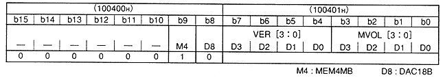
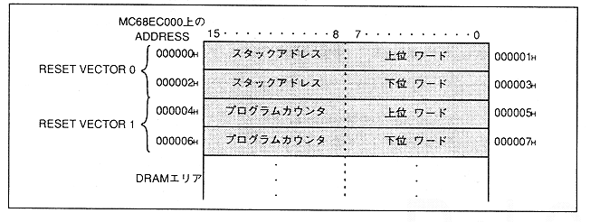

Sound system starts when SMPC cancels SCSP reset. SCSP initializes the internal registers for 30 μsec immediately after the SCSP reset is released. Therefore, access is prohibited for 30μsec.
∙ After SCSP initializes internal registers, it can be accessed from the main CPU (SH-2, SCU). The sound program can be downloaded in this state, but before downloading, be sure to set "1" to the MEM4MB bit and "0" to the DAC18B bit in address 10400H of the sound CPU address. This is the first time you can access the memory. Download here.
Table 1.1 Sound CPU address 100400H, 100401H

Since the sound CPU reads 8 bytes of the sound CPU address (000000H to 0000007H) as a reset vector, be sure to transfer the CPU reset vector to this area.
Figure 1.4 Sound memory area (MC68EC000, SCSP)

After reset is released, the sound CPU reads the reset vector and jumps to the address of the PC value.